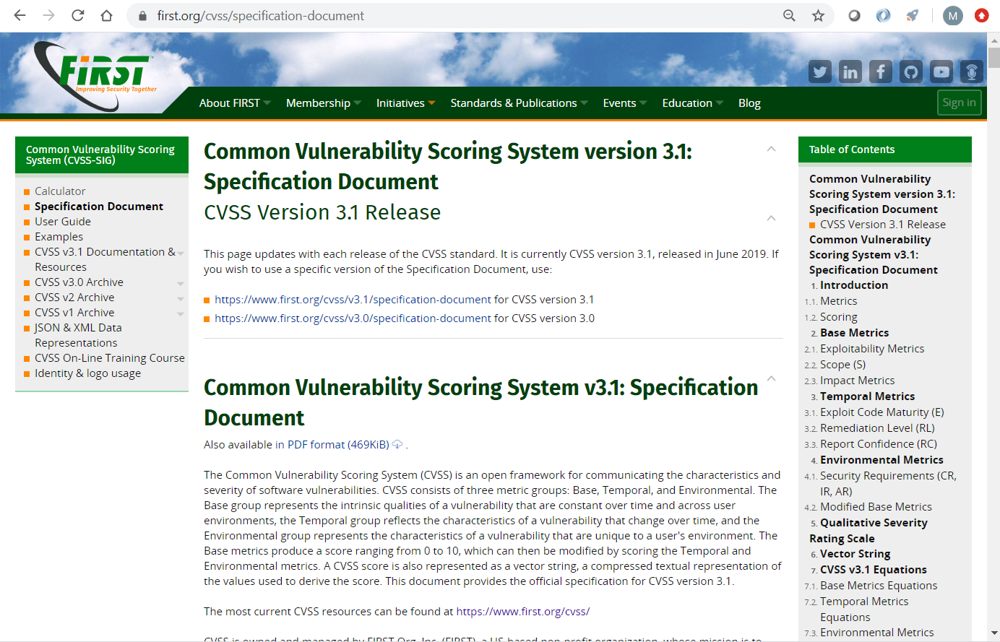
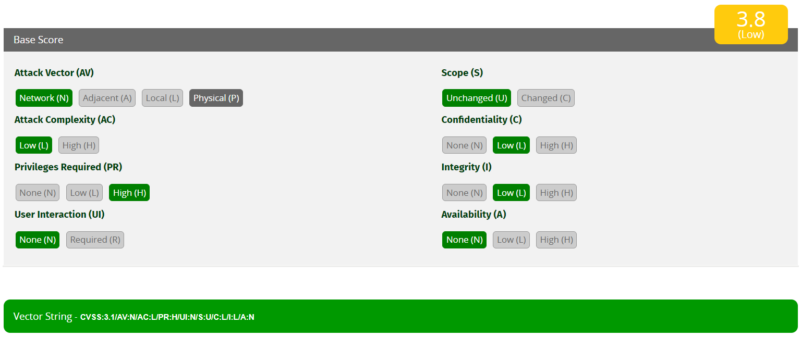
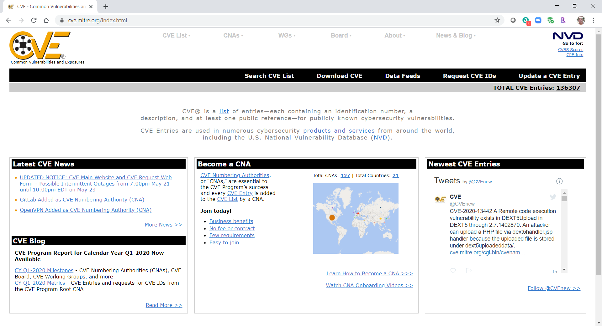
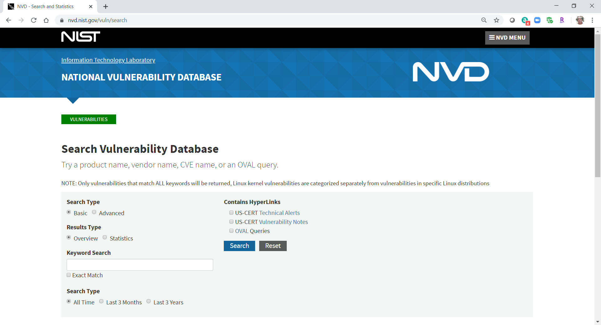

23.2.1 Descripción general de CVSS
El Sistema de puntuación de vulnerabilidad común (Common Vulnerability Scoring System CVSS) es una herramienta de evaluación de riesgos que está diseñada para transmitir los atributos comunes y la gravedad de las vulnerabilidades en los sistemas de hardware y software. CVSS 3.0 (tercera revisión) es un marco de trabajo abierto estándar del sector e independiente de proveedores que permite ponderar los riesgos de una vulnerabilidad mediante una variedad de métricas. Estas ponderaciones se combinan para proporcionar una puntuación del riesgo inherente en una vulnerabilidad. La puntuación numérica puede utilizarse para determinar la urgencia de la vulnerabilidad y la prioridad de abordarla. Los beneficios de CVSS pueden resumirse del siguiente modo:
El Foro de respuesta a incidentes y equipos de seguridad (FIRST, Forum of Incident Response and Security Teams) fue designado como custodio de CVSS para promover su adopción a nivel mundial. El estándar Versión 3 fue desarrollado con contribuciones de Cisco y otros socios de la industria. La versión 3.1 fue lanzada en junio de 2019. La figura muestra la página de especificación para el CVSS en el sitio Web de FIRST.

23.2.2 Grupos de métricas de CVSS
Antes de realizar una evaluación de CVSS, es importante conocer las palabras clave que se utilizan en el instrumento de evaluación.
Muchas de las métricas hacen referencia a la función de lo que CVSS llama una autoridad. Una autoridad es una entidad informática, como una base de datos, un sistema operativo o una caja de arena virtual, que otorga y administra el acceso y los privilegios a los usuarios.
Grupos de métricas de CVSS

Como se muestra en la figura, el CVSS utiliza tres grupos de métricas para evaluar la vulnerabilidad.
Grupo de métricas base
Representa las características de una vulnerabilidad que se mantienen constantes en el tiempo y en diversos contextos. Contiene dos clases de métricas:
Explotabilidad: estas son características del exploit, como el vector, la complejidad y la interacción del usuario que requiere el exploit.
Métricas de impacto - los impactos del exploit tienen su origen en la tríada de la CIA de confidencialidad, integridad y disponibilidad.
Grupo de métricas temporarias
Mide las características de una vulnerabilidad que pueden cambiar con el tiempo, pero no en cada entorno de usuario. Con el paso del tiempo, la gravedad de una vulnerabilidad cambiará a medida que se detecte y se desarrollen medidas para contrarrestarla. La gravedad de una vulnerabilidad nueva puede ser alta, pero disminuirá a medida que se desarrollen parches, firmas y otros.
Grupo de métricas ambientales
Mide los aspectos de una vulnerabilidad que están arraigados en el entorno de una organización específica. Estas métricas ayudan a evaluar las consecuencias dentro de una organización y permiten ajustar las métricas que son menos relevantes para lo que hace una organización.
23.2.3 Grupo de métricas básicas de CVSS
En la figura se resalta el grupo métrico base.
Grupos de métricas de CVSS
La tabla enumera los criterios para las métricas de explotabilidad del grupo de métricas base.

Las métricas de impacto del grupo de métricas básicas aumentan con el grado o la consecuencia de la pérdida por el componente afectado. La tabla muestra los componentes de la métrica de impacto.

23.2.4 El proceso de CVSS
CVSS Base Metrics Group está diseñado como una forma de evaluar las vulnerabilidades de seguridad que se encuentran en los sistemas de software y hardware. Permite describir la gravedad de una vulnerabilidad de acuerdo con las características de un ataque exitoso de dicha vulnerabilidad. Los otros grupos de métricas modifican la puntuación de gravedad básica determinando cómo se ve afectada dicha puntuación por factores temporales y del entorno.
CVSS Base Metrics Group está diseñado como una forma de evaluar las vulnerabilidades de seguridad que se encuentran en los sistemas de software y hardware.

La calculadora es como un cuestionario en el que se toman decisiones que describen la vulnerabilidad para cada grupo de métricas. Después de realizar todas las elecciones, se genera una puntuación. El texto emergente que explica cada métrica y cada valor de métrica se muestra al pasar el mouse sobre cada una. Las elecciones se realizan seleccionando un valor para cada métrica. Se puede elegir solamente un valor por métrica.
Se puede acceder a la calculadora CVSS en la parte CVSS del PRIMER sitio web.
Para respaldar el proceso, hay disponible una guía del usuario detallada que define criterios de métricas, ejemplos de evaluaciones de vulnerabilidades comunes y la relación de los valores de las métricas con la puntuación final.
Una vez completado el grupo de Métricas base, se muestra la clasificación numérica de gravedad, como se muestra en la figura.

También se crea una cadena de vector que resume las elecciones realizadas. Si se completan otros grupos de métricas, esos valores se añaden a la cadena de vectores. La cadena se compone de las iniciales de la métrica y un valor abreviado para el valor de métrica seleccionado, separados por dos puntos. Los pares de valor y métrica están separados por barras. Las cadenas del vector permiten compartir y comparar fácilmente los resultados de la evaluación.
La tabla muestra la clave del grupo Métrica base.

Los valores de la cadena de clasificación de gravedad numérica CVSS:3.1/AV:N/AC:L/PR:H/UI:N/S:U/C:L/I:L/A:N se muestran en la tabla.

A fin de calcular una puntuación para los grupos de métricas temporales o del entorno, primero se debe completar el grupo de métricas básicas. Después, los valores de las métricas temporales y del entorno modificarán los resultados de las métricas básicas para proporcionar una puntuación general. La interacción de las puntuaciones para los grupos de métricas se muestra en la figura.

23.2.5 Informes de CVSS
Los rangos de puntajes y el significado cualitativo correspondiente se muestran en la tabla.

Con frecuencia, las puntuaciones de los grupos de métricas básicas y temporales se suministrarán a los clientes de parte del proveedor de la aplicación o de seguridad en cuyo producto se haya detectado la vulnerabilidad. La organización afectada completa el grupo de métricas del entorno para adaptar la puntuación suministrada por el proveedor al contexto local.
La puntuación obtenida sirve para orientar a la organización afectada en la asignación de recursos para afrontar la vulnerabilidad. Mientras mayor sea la clasificación de gravedad, mayor será el impacto potencial de un ataque y mayor la urgencia de afrontar la vulnerabilidad. Aunque no son tan precisas como las puntuaciones numéricas de CVSS, las etiquetas cualitativas son muy útiles para comunicarse con las partes interesadas que son incapaces de entender las puntuaciones numéricas.
En general, debe afrontarse cualquier vulnerabilidad que supere el valor de 3.9. Cuanto mayor sea el nivel de clasificación, mayor será la urgencia de obtener una solución.
23.2.6 Otras fuentes de información sobre vulnerabilidades
Hay otras fuentes de información importantes sobre vulnerabilidades. Estas trabajan en conjunto con CVSS para proporcionar una evaluación completa de la gravedad de las vulnerabilidades. Hay dos sistemas que funcionan en los Estados Unidos:
Vulnerabilidades y exposiciones comunes (CVE, Common Vulnerabilities and Exposures)
Se trata de un diccionario de nombres comunes, en forma de identificadores de CVE, que hacen referencia a vulnerabilidades de ciberseguridad conocidas. El identificador de CVE proporciona una manera estandarizada de investigar una referencia a las vulnerabilidades. Cuando se identifica una vulnerabilidad, los identificadores de CVE pueden utilizarse para tener acceso a soluciones. Además, los servicios de inteligencia de amenazas utilizan identificadores de CVE y aparecen en diversos registros de los sistemas de seguridad. El sitio web con detalles sobre CVE incluye un enlace entre las puntuaciones de CVSS y la información de CVE. Permite navegar por los registros de vulnerabilidades de CVE según la clasificación de gravedad de CVSS.
Busque Mitre en Internet para obtener más información sobre CVE como se muestra en la figura.

Base de datos nacional sobre vulnerabilidades (NVD, National Vulnerability Database)
Esta base utiliza identificadores de CVE y suministra información adicional sobre vulnerabilidades, como puntuaciones de amenazas de CVSS, detalles técnicos, entidades afectadas y recursos para la investigación posterior. El Instituto Nacional de Normas y Tecnología (NIST) de los Estados Unidos creó y mantiene esta base de datos.
